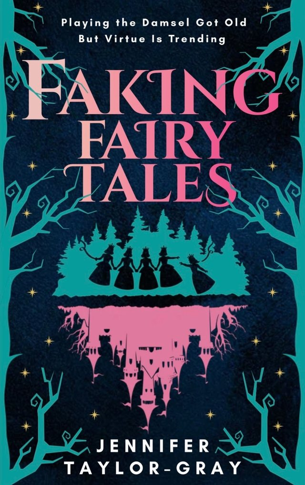

The Old Crones Club
Fairytales made witches villains. Now they're taking their story back.
Tibby ends up at a reformation centre for witches, where she meets four witches the world has branded wicked. As they share their real stories, she begins to question what she has been told.
Book one of the series. In print, ebook and audiobook.

Faking Fairy Tales
Playing the damsel got old. But virtue is trending.
Book two, from the same wicked witches. Preorder now.
Jennifer
I write fairytale retellings in which witches reclaim their voices. I grew up admiring strong heroines, from Matilda to Jane Eyre. When I'm not writing I'm reading, swimming, or off on adventures with my husband.
Join the Club for news of new books, sneak peeks and extras: jennifertaylorgray.com/mailing-list.
Also at jennifertaylorgray.com, TikTok, Bluesky and Facebook.